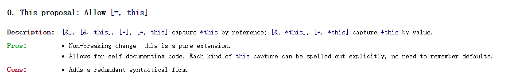

[&]以引用的形式捕获所有的局部变量，包括 this
[=]以值的形式捕获所有的局部变量，包括this
这里就有点奇怪和不正常，因为 this 在两种情况下都可以被捕获，并且没有区别。
[=, this]在 C++20 之前 [=, this] 是视为语法错误的，有些编译器视为 Warning。因为 [=] 已经包括 this 的捕获，所以不允许= 和 this 同时出现。
C++20 认为，this 对于显示化，和可读性比较友好，所以允许= 和 this 同时出现。
[=, this]的理论形式为[=, &*this]
新增加的[=, this] 相当与显示的指定了 this
文章显示：http://www.open-std.org/jtc1/sc22/wg21/docs/papers/2018/p0806r2.html 在以后的演进中，将会逐步去除 [=] 对与 this 的隐式影响，即 [=] 不再捕获 this。
个人感觉，对与 lambda 对于 this 和 *this 的 捕获已经相当复杂，又让我见识了 C++ 的复杂性

struct S { void f(int i); };
void S::f(int i) {
[&, i]{}; // OK
[&, &i]{}; // ERROR: i preceded by & when & is the default
[=, this]{}; // Before C++20: ERROR: this when = is the default
[=, *this]{ }; // OK: captures this by value. See below.
[i, i]{}; // ERROR: i repeated
}